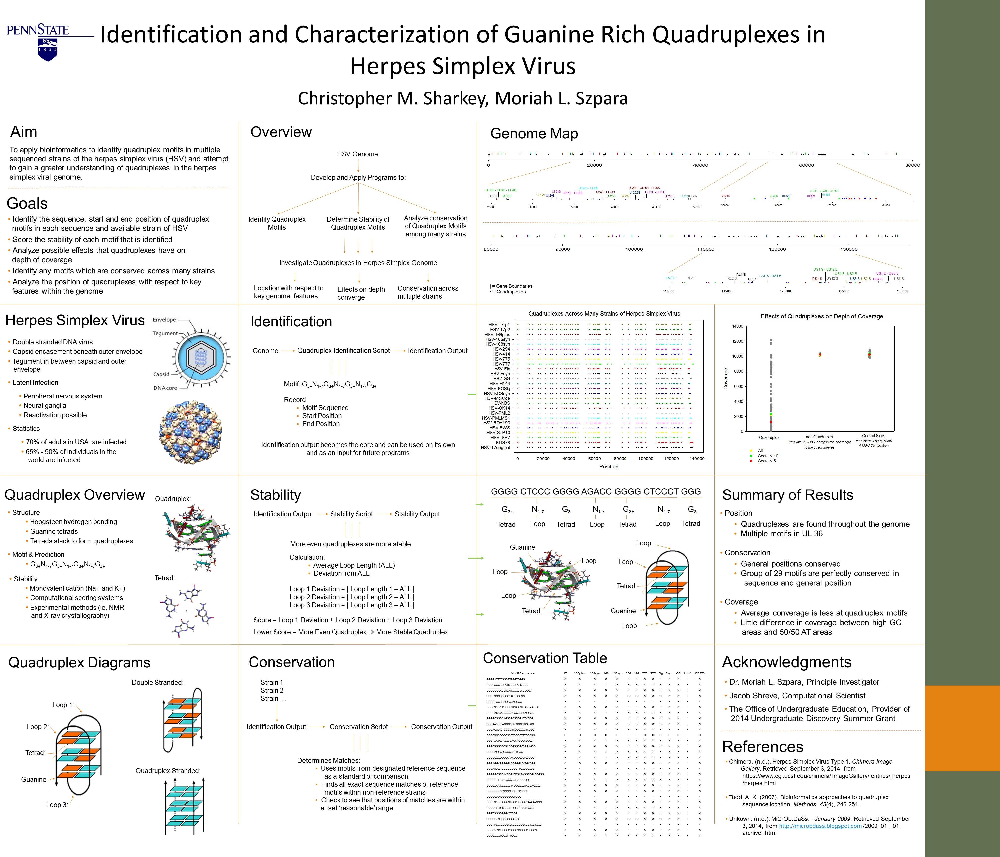
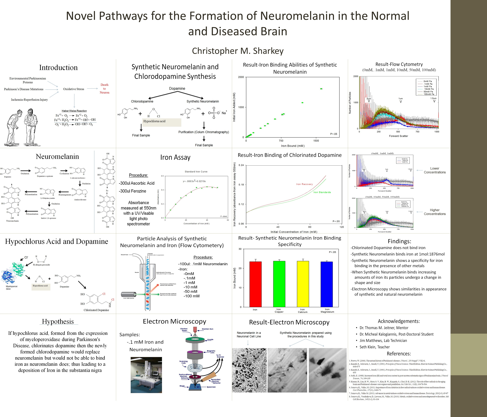
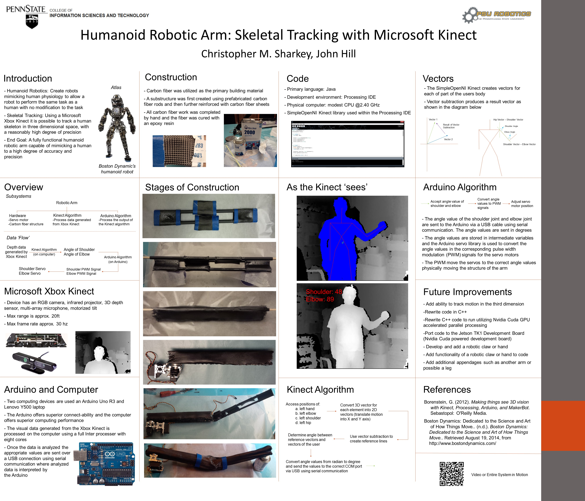
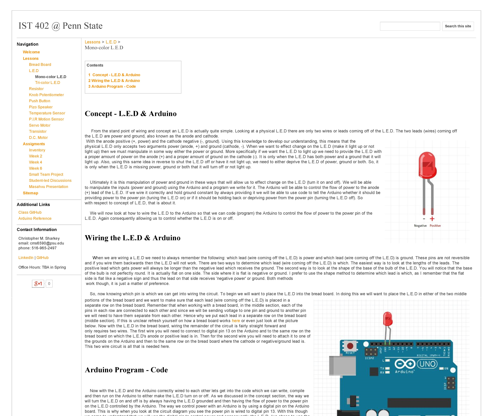

Projects
Data Science
Hack HI - Predicting Kidney Disease with Machine Learning
Hack HI is an internal hackathon to Humana. As an intern at Humana during the summer of 2015, I participated in the hackathon, specifically tackling a data science project. Working with another intern, we built a model for predicting if an individual has kidney disease and if so which stage they are in, using common metrics of a blood test. The data set we used to build our models was an open source data set from the UCLI center for machine learning. The data set contained blood test metrics of a population of roughly 400 people and included, if the individual had kidney disease or not at the time the blood test data was produced. Starting with this data set, the data was generally clean. The only modification to the data set we made was calculating the individual’s glomerular filtration rate, which we used to classify the individuals with kidney disease into which specific stage of the disease they were in. After this modification, we were able to run different machine learning algorithms and not only classify if an individual had kidney disease or not, but also classify an individual with kidney disease into a specific stage of progression. Building predictive models we ran ZeroR, OneR, Naive Bayes and C48. Of the group, C48 was the most effective with 88.4% correct classification validated by a 10 fold cross validation. C48 is an algorithm which creates decision trees based on information gains. After running the algorithms, the model (decision tree) produced a means to classification a new individual by common blood test data. Identifying individuals in lower stage kidney disease could allow for early intervention, saving Humana the cost of treatment for higher stages of kidney disease and improving the patient’s health through early intervention.
ASA DataFest - Machine Learning Targeted Advertising Model for Edmunds.com
Each year the American Statistical Association (ASA) holds what is known as DataFest. DataFest is essentially a data science focused hackathon. This last year I and a team of three other individuals competed in DataFest. The sponsor of the event this year was edmunds.com. As the sponsor, Edmunds opened to all participants a number of data sets related to users who visited their site and who purchased/found cars through their site. Our team’s project used machine learning to build a targeted advertising model based on how a user configured an initial search. Revenue is generated for Edmunds through companies who pay to have their ads places on edmunds.com. Often these ads are for major car companies. Our model was a decision tree generated using the C48 algorithm which uses information gains to determine branching points and criteria. The generated model classified a user’s initial search into which major car company’s ad that user would be most likely to click on. Consequently, providing a data science based solution for a business problem.
Life Sciences
Computational Analysis of G-rich Quadruplexes In Alpha Herpes Simplex Virus

{kind=link}
Guanine rich quadruplexes are DNA and RNA secondary structures. The conventional secondary structure of DNA or RNA is a double helix. However, exceptions exist with respect to the secondary structure of DNA and RNA. Structures such as quadruplexes can form and defy the conventional double helix. Guanine rich quadruplexes form when four guanines Hosteen-hydrogen bond to each other forming a tetrad. When tetrads then fold and stack on top of each other a quadruplex has been formed. In my work with quadruplexes, I have taken a computational approach. Doing high through put analysis of quadruplexes in various sequenced strains of the alpha herpes simplex virus. It is possible to use computation/bioinformatics methods to identify quadruplexes, as quadruplexes are predisposed to formation in guanine rich sequences. More specifically, exact motifs or predefined search patterns exist to identify sequences which are likely to form quadruplexes. Consequently, using regular expressions in python scripts on HPC Linux systems, quadruplexes within sequenced genomes of the herpes simplex virus can be identified. The work so far has yielded interesting results and current analysis is still under way.
Quadruplexes are of interest with respect to herpes virology and in general, as emerging work in the field is beginning to show that quadruplexes have biological significance. Work completed studying quadruplexes in the Epstein bar virus (Murat 2013) has begun to illustrate the role of quadruplexes in regulating the latent genome of the Epstein bar virus. While the role of quadruplexes is still not fully defined, there is interest in investigating these structures in herpes. Herpes simplex establishes a lifelong relationship with its host. After initial infection, the virus enters latency in the peripheral nervous system. The virus can remain latent for many year in this location and can reactivate from time to time. Provided the beginning of interesting insights of the role of quadruplexes in the Epstein bar virus, this project takes aims to studying quadruplexes in the similar herpes simplex virus.
Novel Pathways for the Formation of Neuromelanin in the Normal and Diseased Brain

{kind=link}
Parkinson's disease is a neurodegenerative disorder which is characterized by the death of dopaminergic neurons and accumulation of free iron in the substantia nigra of affected individuals. Free iron accumulation within the substantia nigra (a specific region of the brain) is particularly detrimental as it catalyzes the production of reactive oxidative species (ROS) partially through the Haber Weiss reaction. Free iron in the substantia nigra produces ROS which can cause harm to dopaminergic neurons and possibly propagate Parkinson’s. Provided this context, why does free iron accumulate? Iron in the substantia nigra is not primarily bound by ferritin. It is instead primarily bound by dopamine derived neuromelanin. One hypothesis on why free iron accumulates is a modification of the dopamine used to synthesize neuromelanin. Dopamine could be modified by the by products of the Haber Weiss reaction, mainly hypochlorous acid. Hypochlorous acid has an affinity to react with dopamine and produce a chlorinated dopamine. Chlorodopamine could possibly replace neuromelanin while not replacing its functionality as an iron binding molecule, consequently accounting for free iron.
Within the context of the work completed, an iron assay was developed and work was completed to characterize the metal binding properties of chlorodopamine. Additionally, a method for creating a synthetic model of neuromelanin was used to characterize the metal binding abilities of neuromelanin. The results showed that chlorodopamine binds significantly less iron than neuromelanin. Additionally, investigating the capacity to bind other metals specifically copper, magnesium and calcium, chlorodopamine again showed significantly less capacity to bind these metals than neuromelanin. Finally, the means by which neuromelanin appeared to bind iron and other metals was investigated. Flow cytometry was adapted to study the aggregation of neuromelanin with iron. The flow cytometry results determined the size and number of particles in a population of particles. Using presized standards as a size determinant, two populations of different sized neuromelanin particles were identified. At lower concentrations of iron, neuromelanin appeared to produce a polymer between .5 and 1 um and at higher concentrations neuromelanin appeared to produce an aggregate at 1 um. Ultimately, these and the overall findings illustrated that chlorodopamine does not bind iron. Neuromelanin does binds iron. Chlorodopamine does not bind magnesium, calcium, or copper. Neuromelanin does bind magnesium, calcium and copper. When binding iron, neuromelanin particles go through two distinct stages. Likely polymerization then aggregation.
Internships
I am an incoming intern at Booz Allen Hamilton for this summer. Working specficilly in the Startigic Inovation Group.
Senti Sense
Senti Sense is a startup I cofounded. Launched in the fall semester of my junior year the company was a part of the fall cohort of the lion launch pad accelerator. The startup aims to provide self service twitter analytics to aid in content generation. At the momment we have launch our MVP and are work with a user base in the double digets. Our tool currently provides on a scheduled basis the average sentiment of a users twitter network (your content, followers contenct and followings' content), in addtion to the ideas (key words) trending around the positive and negative sentiments in your network. At the moment this provides value to users in the ability to better understand there indivual network and it provides suggestion of connect to post on the ideas trenindg around positive and negative sentiment. At the moment we are continuing to scale our servceies while also going throught an exustive customer discvoery to better understand our how we can provide value to the users. We have won several awards with the company included 1st place at the lion launch pad's pitch night and membership to the new leaf initavte in State Colledge. We are working on growing the company and we are particating in the advanced eship course in the colledge of information sciences and technolgy this semester.
Humana (Extended Internship)

After completing a summer intership in the enterpise data and analytis group at Humana, I continued working as a remote intern during the year. Now an intern in enterprise architecture I am working on several projects. I have completed a project working on implementing and chocing a vendor for free text analytics of clinical recrods. Completing this project required looking at the current architecture within clincal analytics and realted departments. Building reference architrues for the systems of each daprtment. Determining the architirue of availibe solutions from third parties. Advising on which solutions would work best from a impimation stand point and natraul lagune processing stand point. Currently I am working a second project looking at implemeting a data virualization service on Humana's data lakes. Similar to before I exploring capabilties or tools producing training material on the tools and building supporting documenation to the systems arctirtrie.
Humana (Summer Internship)
During the summer of 2015, I completed a 12 week internship with Humana. Specifically, I was an Information Technology (IT) intern and working within the Enterprise Data and Analytics division, specifically with clinical data. As an intern, I was part of an intern team totaling 4 individuals, including myself. As a group we developed a web application utilizing .NET and the MCV frame work. The application we developed was focused on managing the process of on boarding a new lab connection which after on bordered, provides Humana with clinical data. Using data, amongst many things, in the calculation of the company’s Stars bonus from the federal government. The application we developed specifically managed the on board of a new lab from multiple perspectives. The application allowed an administrator to create a new lab and tasks for the specific lab. These tasks could then be assigned to specific departments, allowing for said department to know which tasks they had to complete. Additionally, tracking the progress of each lab through additional views, the tool also allowed for a broader view of which stage the labs were in the on boarding process. This allowed managers to follow the process at a higher level. The application ultimately produced user customizable tools for tracking a work flow. This had detailed information relevant to the individuals assigned the task and higher level information relevant to user managers involved in the overall process.
Mobium Solutions
Mobium Solutions is a 3D printing startup which produces a suite of software and hardware to allow for repeatable autonomous 3D printing. My work with the group has mostly been focused on hardware/software integration and back end web development. The hardware solutions offered by the company utilize a build plate with a removable surface. I worked extensively with the electronics and logic controlling the initiation of a print, the stopping of a print and the ejecting of a print from the build plate. Additionally, the company offers software solutions which work with the hardware products. These solutions are web based applications which allow individuals to register a 3D printer and then que up STL files to be printed by specific printers. The software also allows the user to visually monitor a print from their specific web pages. Users can also create groups of printers and assign specific permissions to other users in their group, with respect to their ability to print on specific printers. The technical aspects of the work require python and shell scripting on the hardware/software integration end and HTML/CSS, Angulat JS, MongoDB and JSON on the software solutions end of my work with the group.
Aerospace
Lunar Lion Test Craft Systems Integration
{kind=link}
{kind=link}
{kind=link}
As the deputy of guidance navigation and controls for the Penn State Lunar Lion Team, I have worked on a number of projects. However, prefacing this description of my work, the Penn State Lunar Lion Team is an aerospace engineering project team. Originally a GoogleX Prize team now a private team. The goal of the team is to land a student built space craft on the moon. The current general progress of the team is focused around testing and building out the current test craft Puma. My focus within the team so far has been systems integration. This primarily entails adding new hardware and interfacing the new hardware with the current code base. Members of the team who work with the control algorithms rely on different sensor values and information communicated via multiple radio systems. As the lead on the systems integration end of the project, it has primarily been my own and my own team’s responsibility to install and integrate these sensors and effectors. This often means physically building and soldering connectors for the different sensor and microcontroller and writing/utilizing C, C++ or python libraries, to read and write the different sensors. We have currently finished the systems integration on a prototype board (pictured above left). This board is essentially powered by two Arduinos and a pixHawk. It was built for a proof on concept. More recently, we are migrating our development to an actual ruggedized embedded system (pictured above center). This system uses python and robot operating system (ROS) on a live Linux distro and will in time either replace the original control board or be the main control system for the next test craft.
Robotics
Humanoid Robotic Arm

{kind=link}
As part of an independent study in the college of Information Science and Technology at Penn State, I completed work on a project which utilized an Xbox Kinect to track a user’s skeletal movement. A program calculated the angle of the individual's elbow and shoulder in degrees. These values were sent via. serial over usb to a Arduino powered and servo driven carbon fiber robotic arm. In the end, the Kinect tracked the user's motion and translated the motion in two dimensions onto the arm. The simple open NIKinect library was used to help access data from the Kinect. The code base parses and preforming calculations on the data generated from the Kinect was written in Java using the processing IDE. The code base controlling their Arduino is written in C++ using the Arduino IDE. The final project worked well. The Kinect was able to track a user in real time with no noticeable lag. The Java making calculations was run on a standard laptop computer which was sufficient for the process. The physical arm and Arduino also performed well. The serial connection between the Arduino and the computer worked well with little lag. Processing at a baud rate of 115200 and alternating sending shoulder and elbow angle values, the Arduino and motor were very responsive. In retrospective, more powerful servos and more experience working with carbon fiber would have made the arm more robust however, the achieved structure with standard 9g servos worked well. After completing the project it was presented at the World Maker Faire in New York City. The project was well received by the audience and received a lot of great feedback. Additionally, after the Maker Faire the project was featured in Engaget Japan in a roundup of the interesting projects at the fair. The article featured in Engaget Japan can be found here . Also, a more informational wiki for this project exists here . On this site more detailed technical information can be found. The code for the project is also open sourced and is in a git hub repository here .
Miscellaneous
IST 402: Sensor and Effector Systems

{kind=link}
IST 402: Sensor and Effector Systems is currently an incubator course offered at Penn State. The course from a higher level is a course on sensor and effector systems. On a lower level, the course teaches students the fundamentals of embedded programing. Students use Arduinos and a variety of sensors and effectors to build small systems. My role in the course is an administrator and as a Teaching Assistant (TA). In a two semester school year, the course is only offered during one of the semesters. When the course is offered I am a teaching assistant. As a TA, I will give short 20 minute lectures on concepts and then assist students in completing an exercise which reinforces the concept. Also, outside of class I partake in the usual TA duties of grading and holding office hours. When the class is not offered, my role is more as an administrator. More specifically, I wrote the curriculum for the course. I created a Wiki which is divided into approximately 12 exercises which use a specific component to teach the fundamental concepts of embedded programming and signaling. Each exercise I create had an explanation of the concepts, a wiring diagram with explanation and source code with explanations. Each exercise not only taught a new concept but also stood as a reference for using the specific sensor and effector. After teaching and running the course for the first time, the course received an endowment from the college of Information Science and Technology. The course was consequently run a second time and now is in the process of transitioning from an IST 402 course (which is the course number for experimental courses) into its own course number. Also, with the endowment, work is under way to build the program into a three course program with two additional advanced sensor and effector classes.
Digital Line Management System
{kind=link}
The digital line management system was developed to manage the capacity of the Bryce Jordan Center THON weekend. THON is the largest run student philanthropy in the world. Last year THON raised over 13 million dollars for pediatric cancer. THON raises its money through a year’s long fundraising campaign which culminates in a 72 hour dance marathon in the Bryce Jordan Center (BJC) at Penn State University. During THON weekend over 100,000 people enter and exit the Bryce Jordan Center. I and a fellow developer created the digital line management system to manage the capacity of the BJC THON weekend. The system is necessary as the building must be contained below a certain safe occupancy at all times, including the very popular times of the weekend. The system was a web application which used a HTML/CSS front end with a SQL back end and PHP communicating between the front end and the back end. The system contained multiple user tables which had a variety of information bar code ids. Bar coded wrist bands were distributed prior to THON weekend and the system was used to scan bar codes at specific stations and validate/track the number and specific types of individuals in the BJC during the entirety of THON weekend. The system's primary impact on the weekend was the minimization of lines. Prior to the system, it was often difficult to track the number of individuals and since no barcodes or equivalent means was provided prior to the event, lines often formed as people simply waited to get into the BJC. Distributing the wrist bands prior to THON and having an effective system to scan and evaluate them greatly reduced lines and improved the experience.